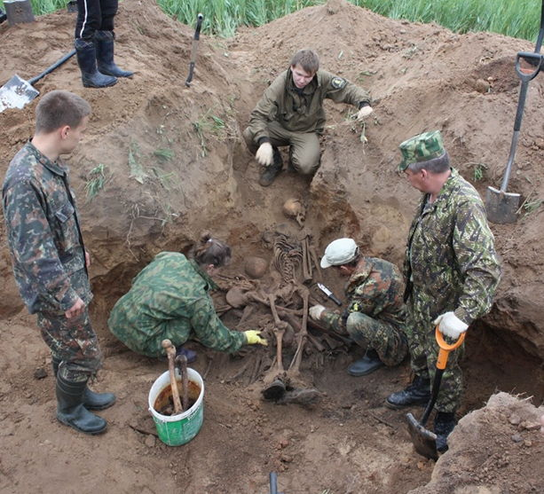
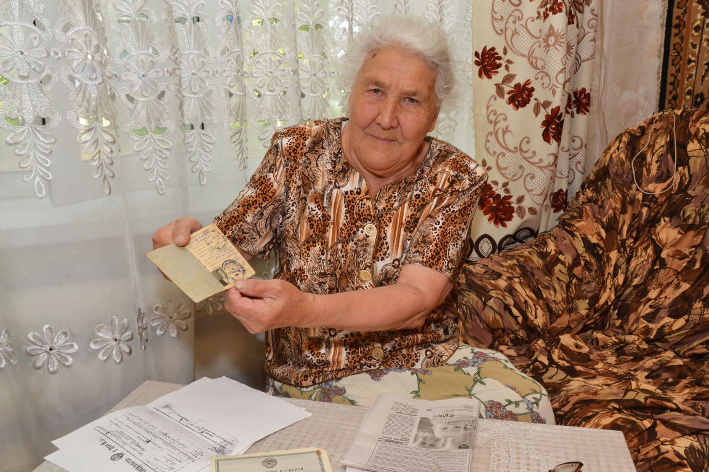
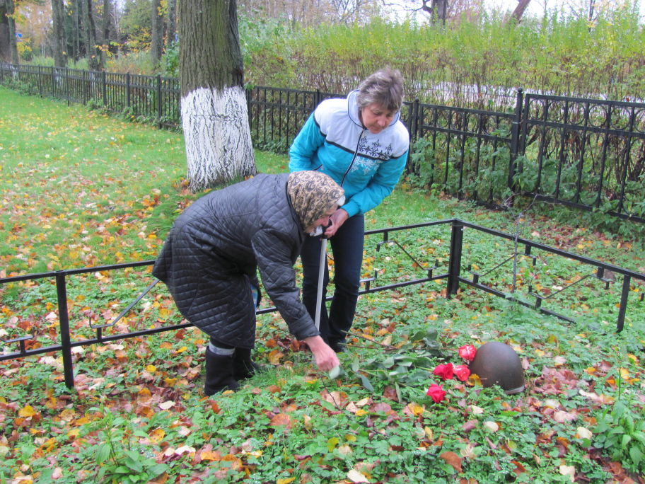
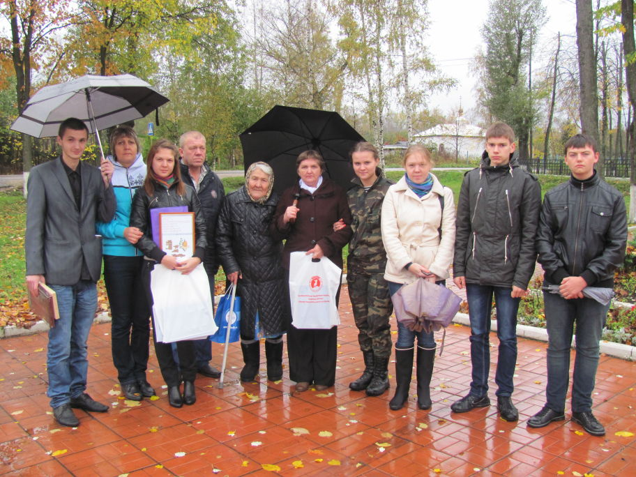

В мае 2011 года у д. Опарино Калининского р-на Тверской области поисковым отрядом "Звезда" (г. Тверь) найдено санитарное захоронение. Было очень много воды, поэтому тогда была поднята только часть бойцов. А 18-19 июня 2011 года поисковые отряды г. Твери («Звезда», «Поколение», «Ополченец», «Эдельвейс» ) завершили начатую в мае работу по поднятию останков у деревни Опарино. Захоронение было поднято полностью - 28 бойцов и 9 медальонов.

Один медальон из этого раскопа оказался необычным – содержал записки на 2-х бойцов – земляков Хабубулина Жиляя и Белозерова Алексея Ксенофонтовича. С помощью сообщества форума «Солдат.ру» нам удалось найти родственников Белозерова Алексея Ксенофонтовича. У него нашлись дочь и внучка, которые живут а Анжеро-Судженске.
По данным из ОБД:
Хабибулин (Хабубулин) Желяй 1907 г.р. Кемеровская обл., Ижморский р-н, с. Теплая Речка. Призыван 22.06.1941 Анжеро-Судженскии ГВК, Новосибирской обл., г. Анжеро-Судженск, рядовой, стрелок, пропал без вести 05.1942 г. Жена Хабибулина Файбина, г. Анжеро-Судженск, д. п-к Барзаский, д. 5

В течение года мы искали родных Желяя, поиск через СМИ ничего не давал. О родственниках Хабибулина так ничего и не было известно…
Но 7 июня 2012 года мне удалось выйти на недавно созданный сайт «Сводного поискового отряда Кемеровской области «Земляк». Написала письмо с просьбой помочь в поиске родственников их земляка. В ожидании хоть какой-нибудь весточки минуты затянулись в часы, часы в дни, а дни в недели…

На календаре 22 июня 2012 года…сажусь в машину и мчусь из Москвы в Тверь …звонок с неизвестного номера, беру трубку:
- Анастасия, здравствуйте! – взволнованным голосом сказала мне женщина.
- Добрый день! – ответила я.
- Это Марина Вострякова, командир СПО Кемеровской области «Земляк». Нашлась дочь Хабибулина Желяя! – с радостью сообщила она…
Дрожь моментально пробежалась по моему телу…непередаваемые чувства творились внутри…не верится…кладу трубку…чтобы убедиться, достаю календарик:
- Нет, не ошиблась… и вправду 22 июня! – прошептала я.
- Но почему именно сегодня, а не вчера и не завтра?! - с этой мыслью я погрузилась в бескрайние и загадочные поля, проплывавшие за окном автомобиля.
Он вернулся с войны…вернулся к своей семье…
Солдат Желяй Хабибулин, которому навсегда останется тридцать пять, перезахоронен 3 ноября прошлого года в братской могиле в пос. Мигалово, г. Тверь.
2 октября 2012 года на могилу своего родственника приехали его дочь - Бансат Мужбатулина, внучка – Алла с мужем и 2 правнучки.

Анастасия Щербакова,
в 2011 г. - лауреат ежегодной премии Фонда «Жить и Помнить»
за поиск и увековечение Памяти павших защитников Отечества.